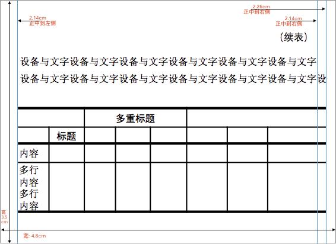

注1：本文所涉及的工具，可以采用如下方法安装：
# 含identify,convert,mogrify,pdfinfo,pdftoppm等
> brew install ghostscript imagemagick cpdf poppler
# 含pdfcrop等
> brew cask install xquartz mactex inkscape
注2：本文缺省是使用PNG图片，使用JPG的方法是一致的（有极少数的转换工具不同）。
如果你总是将一张『足够清晰』的图片缩小到适合Kindle电子书阅读的比例，那么本文中的问题就不是问题：缩小一张普通的图片时，图片质量通常并不会变得更糟。但如果图片中使用了文字，那么麻烦来了：你不知道一张图片中该用多大的文字才能确保图片缩小之后仍然清晰；另外，你也知道的，『线条和文字』在图片缩放操作中总是会有明显的变形。
在Kindle这类电子书中使用『表格』向来是一个巨大的麻烦，其原因就在这里：表格在HTML/Markdown中通常都不友好，而当你决定直接使用图片时，缩放操作对文字和线条又不友好。
你最好的选择是：使用一个阅读器不会对它进行缩放的、确定大小的图片。
那么这样一张图片应该是多大呢？
阅读器有多大，图片就有多大
答案如标题所说。只要你确切知道阅读器（的可阅读区）的大小，那么制作相同大小的图片就好了。不过对于Kindle——当然也可能包括别的电子书阅读器来说，这个大小要打个折扣。这是因为Kindle设定图片最大宽高度不得超过大约80%的可阅读区。一旦超过这个大小——该值其实是一个不确定的魔法数值，这在后面会更讲到——那么阅读器就会主动缩小这个图片。
Kindle发行过的一些阅读器的规格主要包括（相关数据在这里，最新近的一些在这里）：
| 分辨率 | 类型 | Pixel Per Inch |
|---|---|---|
| 1024x600 | ISP LCD | 169/171 PPI |
| 1280x800 | ISP LCD | 149/189/216/252 PPI |
| 1920x1200 | ISP LCD | 254/323 PPI |
| 2560x1600 | ISP LCD | 339 PPI |
| 800x600 | E Ink | 167 PPI |
| 1024x758 | E Ink | 212 PPI |
| 1200x824 | E Ink | 150 PPI |
| 1448x1072 | E Ink | 300 PPI |
不仅如此，Kindle还发行过一系列平板的版本（当然使用的是LCD屏而不是电子墨水屏），这些屏幕的规格就更复杂了，例如官方公布的一些规格（在这里）。
综合上面的数据，从实用性的角度来说，我们应该制作宽度小于600*80%左右大小的图片。这条规则在大多数设备上都是适用的——关于这个问题其实是有过广泛的讨论的（例如在这里，以及amazon开发者信息在这里）。但这个值不但与设备有关，甚至还与不同的Kindle版本有关，以至于有人发布出测试用的电子书，用来确定在不同设备上的适配图片大小（Kindle Maximum Image Size (PRC) ）。
好吧，总之我们是只看结论的对不。那么，这个结论如下：
建议你将图片的大小控制在
520*622px以内。
也就是说，图片宽度在520px以内（640*0.8125 or 600*.87）。
如何做这样大小的图片
下面我们来讲『如何做』。
什么是『这样大小』
首先确定一下『这样大小』到底是怎样大。
因为我们所谓520px的图片，其实要从像素点换算成印刷用的厘米(cm)、英寸(in)或磅值(pt)，这些看起来麻烦的东西，通常是平面设计师的基本功。
在显示器上的所谓520px，实际含义是『在一个72ppi的设备上显示520pixel』（注3）。这里的PPI是『像素/英寸(Pixel Per Inch)』，这通常用在显示输出类的设备上；更经常的，你可能看到的是用Dots来表示Pixel，就是DPI了（注4）。一般情况下，这两种说法并不需要区分，都称作分辨率(Resolution ratio)、质量/精度/密度(quality/density)——具体到不同场合则是打印分辨率、显示分辨率、图片精度等等，参见这里）。
注3: 对于PPI，Windows系统默认为96， Mac OS系统默认PPI 为72。在使用Macbook Pro的Retina屏时，它的默认值是110。
注4: 注意，我们说宽520px时实际上是在讲一张图片的"Pixel Dimensions（点阵面积）"中x方向的大小，而72dpi/ppi却是指获得（例如扫描设备）或输出（例如显示设备）这个点阵图时的精度。
我们前面列出Kindel的设备参数时，设备的PPI是很复杂的，从149到339有非常多种；而它们显示具体图像的分辨率，也有800x600 .. 2560x1600等非常多种模式。不考虑其具体映射和实现的细节的话，你可以认为：
我们使用300DPI的图片，在多数设备上总是可行的。
那么：一张520x320px大小的300dpi的图片，到底是怎样大小呢？
高度320px是上面所说到的622px的一半略多。这是因为我们在电子书上通常不会把一张图做到全屏大小，而使用以半屏高为上限的图片有利于书籍的自动排版。
面积计算
想知道这个大小，那么只需要在图形制作软件中新建一张图片，设置像素大小（即是Pixel Dimensions）为520x320px，然后设置分辨率为300DPI，就一切OK了——通常这种情况下我们不需要去手工计算。然而如果你在PowerPoint或Keynote里去做类似的事情，就会发现：.ppt中设置页面是使用厘米(cm)，而.key中却是使用磅（pt）。我们的难题之一，便是要做这个转换（以宽520px为例）：
- 520/300*2.54 = 4.4026（厘米）
- 1英寸 = 2.54厘米
或者为了避免你总是手工计算，那么查看上面创建的图片的信息也可以（设图片名为test.png）：
注意：identify是ImageMagick中的一个工具，在使用
brew install imagemagick安装后会同时得到这个命令行工具。
> identify -verbose ./test.png | grep -E 'Units:|Resolution|Print'
Resolution: 118.11x118.11
Print size: 4.40268 x 2.70934
Units: PixelsPerCentimeter
注意identify对图片来说缺省单位是厘米（Centimeter），而不是习惯上PPI/DPI中所说的英寸（Inch），所以Resolution显示是118.11（DPCM，Dots Per Centimeter）。如果你想要显示为DPI，那么应该这样：
> identify -units PixelsPerInch -verbose ./test.png | grep -E 'Units:|Resolution|Print'
Resolution: 300x300
Print size: 1.73333 x 1.06667
Units: PixelsPerInch
在ppt或keynote上实作
我们具体使用ppt/key的时候，其实会比上面的520x320px要略大一点，然后使用参考线来辅助作图。这是为了在ppt/key中具体画图时边界上留一点余量，便于操作。具体来说，我推荐的是使用：
- 在.ppt中设置页面大小为
4.8x3.5cm，或 - 在.key中设置页面大小为
136x99pt
接下来在PPT中设置两三条辅助线（以PPT为例，你可以下载这个模板PPT格式或Keynote格式）：
- 右、左侧2.14cm各一条
- 右侧2.26cm一条
如下图所示：

我们通常作图时让内容保持在正中间的2.14*2的范围内即可，当右侧使用到极限时会是2.14+2.26cm，亦即是全宽520px。同时，如果是4磅大小的文字，单行可以容纳30~31个（如图）。我建议采用4磅文字，其下限是3.5磅。
最后，当你在上面的页面上完成图、表之后，如果你使用PPT，那么可以直接在图形上鼠标右键，选『另存为图片』，然后选PDF（注4）；如果你使用Keynote，请在文件菜单中选『导出』，仍然也是选PDF。
强烈说明：注意这里要用PDF！
接下来，你在Macbook中的『预览（Preview）』工具中打开上述PDF文件，再选导出到PNG，并设置分辨率为300 dpi。即可。
我们验证一下这样得到的一个.png的信息（注5）：
> identify -verbose ./ppt533.png | grep -E 'Units:|Resolution|Print|Geometry'
Geometry: 533x191+0+0
Resolution: 118.11x118.11 ## 如果使用-units PixelsPerInch，则这里为300DPI
Print size: 4.51274x1.61714
Units: PixelsPerCentimeter
注4: 我们后面将使用在PPT中选中图形导出的这个PDF（命名为ppt533.pdf），以及转换后的图片（ppt533.png）。稍后我们会讲述Keynote中的处理方法。此外，如果你在PPT绘制了很多东西，那么建议你先建个组(Group)再导出它们。
注5: 你会注意到这个宽度不是预期的520px。这是因为PPT选中图形导出时会默认添加边框，所以如果你只使用模板中间的安全部分，那么上述方法总是安全的；否则你需要使用crop工具去切掉周边的空白区。关于这个部分的内容，我们在下面还会讲到。
理解PDF与PNG文件大小之间的关系
为了讨论这个问题，我们再检查一下上面生成的PDF文件：
> identify -verbose ./ppt533.pdf | grep -E 'Units:|Resolution|Print|Geometry'
Geometry: 128x46+0+0
Resolution: 72x72
Print size: 1.77778x0.638889
Units: Undefined
你会注意到PDF文件中Units值是没有的。这是PDF格式特殊的地方，事实上在它的文件格式中并没有包含Resolution、Print size和Units的信息——上面由identify得到的信息是计算出来的，而不是文件中的元数据信息。更具体地说，PDF是约定了默认使用72x72DPI的分辨率（所以Identify也直接在默认时使用了Inch作为单位，与图片的默认值不同），而且它是使用Points（磅值/点）来表明大小。那么显而易见的，上述的Print Size是简单地通过128/72就可以得来了——PDF默认采用72x72的DPI原因，也正在于磅值与英寸的换算关系就是72:1（关于这一点，请参见老马的文章）。
所以现在你可以得到两个与大小相关的信息，一个是宽高信息(Pts)，也称为页面大小(Page Size)，另一个是可推算出来的打印面积(inch)。而在从PDF转换到PNG图片的过程中，通常就以这个转换后的打印面积来作为图片物理大小。
接下来我们来逆推一下一张300DPI的PNG图片该是怎样的。如果这张图片是如上的1.77778宽度，并且由于DPI设定是300，那么显然图片在x方向的点阵大小（pixels）应该就是300*1.77778=533px。具体来看上面这张通过『预览』工具导出的ppt533.png，它的信息就是这样：
> identify -units PixelsPerInch -verbose ./ppt533.png | grep -E 'Units:|Resolution|Print|Geometry'
Geometry: 533x191+0+0
Resolution: 300x300
Print size: 1.77667x0.636667
Units: PixelsPerInch
也就是说：在转换过程中，通常是保证Print size大小不变。
在GhostScript中对DPI的一点不同理解
如果你不想直接使用『预览』工具来导出，那么你可以为它建立一个automator任务或服务——这样就可以在命令行上使用了。或者，你也可以尝试使用GhostScript（也就是gs）这个命令行工具。
但是如果你使用GhostScript来将PDF转换成PNG，那么缺省情况下它是将Points直接对应地转换为Pixels的——也就是将PDF中的一个打印点，转换为图片中的一个像素点。因此假使你不使用设置分辨率的-r参数，那么你就将直接转换得到一个128x46 pixels, 72DPI的图片。
# (下面这个结果显然不是你想要的)
> gs -dSAFER -dBATCH -dNOPAUSE -sDEVICE=png16m -sOutputFile=128px.png ppt533.pdf
更进一步，如果使用-r 300来指定300DPI输出，那么图片要有533 px的宽度（这个我们上面已经计算过了），而原始的PDF只有128 pts的宽度。所以这时，你将会得到一个低质量的、从128放大到533的图片。
如果你需要用gs来转换pdf到png，那么你应该先放大这个pdf到合适的宽高大小，然后再输出。下面是其中一种可能的方案：
# 先放大300/72=4.1667倍
# - 也可以使用另一个开源工具pdfScale
# - 目的是使pts与我们要得到的图片pixels点数对应，以确保图片质量足够
> cpdf -scale-page "4.1667 4.1667" -scale-to-fit-scale 4.1667 -o 300dpi.pdf ppt533.pdf
# 再转换得到300DPI的图片
> gs -dSAFER -dBATCH -dNOPAUSE -sDEVICE=png16m -r300 -sOutputFile=300dpi.png 300dpi.pdf
# 再reszie图片
# - 转换成png时Page Size大小将保持不变，因此需要按72/300为比例换回去
> convert 300dpi.png -resize 24% ppt533.png
现在我们再来看看这张图片：
> identify -units PixelsPerInch -verbose ppt533.png | grep -E 'Units:|Resolution|Print|Geometry'
Geometry: 533x192+0+0
Resolution: 300x300
Print size: 1.77667x0.64
Units: PixelsPerInch
虽然这个过程是能得到符合我们要求的图片，但的确过于复杂。我们后面将介绍一些其它不使用GhostScript的方法。
使用导出PDF文件的方法来得到图片的一些问题
1) 成批导出与转换PDF文件
如果总是在PowerPoint中将图形对象选中然后右键导出成PDF，那么在成批处理时就会比较繁琐；另外，在Keynote中根本就没有这个操作。所以事实上我们一般还是会将整个的PPT/Keynote文件另存、导出为.PDF文件。这样的文件称为多页PDF——很显然地，因为我们见到的大多数PDF文件都是多页的，并且它们的页面大小是一致的。
然而事实上我们要处理的每张PNG图片都可能大小不同，因为在PPT/Keynote中实际作图的有效区并不一样大。你可以选择将PDF从多页转换成一批单页，或者寻找能直接处理多页PDF的工具。——不幸的是，一些情况下后面这类工具并不太容易得到。
所以如果你真的需要先转换成单页PDF，那么我建议你使用pdfseparate这个工具，它包含在poppler这个工具包中。用法如下：
# 第二个参数是文件名模板，必须包含'%d'来作页码的占位符
# - 目标文件的目录必须先创建(例如本例中的extract)
> mkdir ./extract
> pdfseparate your.pdf './extract/page%d.pdf'
2) 要切掉空白
在转换到图片之前，我们还得先留意一下这个.pdf外围的空白区。
在上例中，如果你在Keynote中导出.pdf，或者在PowerPoint中导出页面（而不是选中图形导出），那么你将导出的是整个页。我们上面说过，为了制作方便，我们的整个页其实要略大一些，而只有参考线中间部分的图形是在电子书中有效的。
那么我们其实需要的是自动切掉图形外围的空白区(trim/crop)——在不同的软件中，可能是这两种功能之一。你可以选择处理最终生成的.png图片，这可以仍然使用上述ImageMagick套件中的convert（你安装之后在命令行中就有了），也可以早先做一步，对.pdf进行trim/crop操作。
这可以使用一个非常著名（而且名实相符）的软件，叫pdfcrop。它是perl脚本，可以你可以直接从官方下载（例如这里），或者安装一个TeX套件包内含（使用brew cask install mactex）。使用起来也很简单：
# Usage: pdfcrop <input[.pdf]> [output file]
> pdfcrop xxx-300dpi.pdf croped.pdf
如果省略output参数，则它以input文件名自动生成-crop.pdf后缀的文件。
另一个相对来说也很可靠的工具叫pdfCropMargins，它可选的参数也更多。比如：
# pdfCropMargins可选使用Ghostscript或pdftoppm作为将pdf渲染为图片的工具
# - 参数-gsr表明使用Ghostscript（缺省是pdftoppm）, 参数-gsp表明gs可执行文件的路径
# - 参数-p/-p4来指定relative original margin模式的边距
# * 可以用-a/-a4指定边距的absolute offset值
# * 参数-ap/-ap4是在剪切前计算最终页面大小时使用的(p是指preCrop)
# * 参数-m/-mp是用在uniform模式下指定边距，并隐式地打开该模式(或显式使用-u参数)
> pdf-crop-margins -p 0 -gsr -gsp /usr/local/bin/gs -o croped.pdf your.pdf
pdfCropMargins与pdfcrop都有resolution参数：
- 在pdfcrop中是
--resolution - 在pdfCropMargins中则是
-x/-y，或--xRes/--yRes
这个参数是用在将PDF渲染成图片时提高图片精度的。因为这两个工具实际上都是先将PDF渲染成图片，然后根据图片来查找margins的，所以提高这一精度就意味着查找margins更准确。但这个参数并不会影响转换后的PDF的质量。
其它：
- 在pdfcrop中建议打开
--hires以提高crop的质量，这种情况下margin计算更精确- 在pdfCropMargins中的参数
-ap/-ap4正好相反，较不精确但速度更快
- 在pdfCropMargins中的参数
- 使用较低的resolution值速度更快，这与内部将pdf转为图片时的速度效率有关
- pdfcrop缺省的resolution值为72dpi，而pdfCropMargins缺省为150dpi
- 在pdfCropMargins中缺省使用的pdftoppm会比gs引擎要慢一点
- 在pdfcrop中指定TeX引擎为
--xetex时，crop运算的效果常常会出错
3) PDF转换到PNG图片时的工具选择
无论PDF是否经过crop，你最终都只是想得到图片，所以这最后一步尤其重要。
切记要给转换软件指定300dpi的输出精度——如上所述，我们是按这个精度来设计的图片大小。除了『预览』这个软件之外，能指定转换精度的软件看起来不少，但大多数并不合用（注意gs是可用的，但并不方便，这在之前我们已经专门讲过了）。例如下面这几个：
# 使用inkscape
# - 只能处理单页pdf，可能会因字体不匹配而出现字体异常；效果好于gs，且能将dpi置为300
> inkscape --without-gui --export-dpi=300 --export-png='300dpi.png' croped-p1.pdf
# 使用ImageMagick中的convert
# - convert的density用于指定源pdf为300dpi, 而输出的png其实总是72dpi
# - 只能处理单页pdf，但视觉效果好于gs(也好于gs的DEVICE=pnggray)
> convert -density 300 croped-p1.pdf -background white -flatten 'error-dpi.png'
# 使用pdf2png
# - Github: https:/.html/github.com/kaorukobo/pdf2png-mac
# - 能逐页处理，但输出png的精度受xcode中的组件影响(缺省是144dpi)
# - 参数--dpi是用于指定源pdf的dpi值的
> pdf2png --dpi 300 --page 1 --output '144dpi.png' croped.pdf
事实上所有这类软件都是将源PDF理解为72dpi，所以针对源来指定的Resolution值其实是用于建立一个缩放工厂（scaleFactor），以便得到等同于指定DPI大小的图像。而不同的软件的区别仅在于是否能在输出PNG时，有效的指定png图片的dpi——例如pdf2png是基于xcode的NSMakeRect()，而该组件默认精度在retina screens上就是144dpi。
所以请仔细review这个过程，其实完全等同于『在GhostScript中对DPI的一点不同理解』小节中所讲述的：1. 先放大PDF；2. 渲染成PNG到指定精度；3. 缩小PNG到指定大小。
4) 一步到位
如果你希望一步到位地解决上述问题，那么我目前只有一个工具推荐：
注：nconvert是xnview提供的一个非商用免费工具，下载在这里
# 用ncovert将croped.pdf转换到png
> nconvert -xall -dpi 300 -out png -o pic croped.pdf 1>/dev/null
Conversion of croped.pdf into pic-0.png OK
Conversion of croped.pdf into pic-1.png OK
Conversion of croped.pdf into pic-2.png OK
...
# 或者不对original.pdf做crop操作，而是直接在nconvert中转换并autocrop图像
# - autocrop参数格式为"tol r g b"，其中tol是容错值，rgb为crop掉的颜色
> nconvert -xall -dpi 300 -out png -o pic -autocrop 0 255 255 255 original.pdf 1>/dev/null
Conversion of croped.pdf into pic-0.png OK
...
所以，本文中的模板所导出的PDF(在这里)转换成png所采用的方法就是如下：
# 在PowerPoint/Keynote中将ppt导出成.pdf，然后
# - nconvert是从0页开始对pdf计数的
> nconvert -page 0 -dpi 300 -out png -autocrop 0 255 255 255 standard_image_templet_520.pdf 1>/dev/null
Conversion of standard_image_templet_520.pdf into standard_image_templet_520.png OK
# 查看png文件的信息(现在就真的是520px宽+300DPI了)
> identify -units PixelsPerInch -verbose standard_image_templet_520.png | grep -E 'Units:|Resolution|Print|Geometry'
Geometry: 520x306+0+0
Resolution: 300x300
Print size: 1.73333x1.02
Units: PixelsPerInch
最后需要补充一点：就效果来说，基于图像autocrop与pdfcrop并没有太大的差别——反正我是分不出来。另外，你也可能想尝试使用imagemagick中的trim操作来替代autocrop：
# 使用nconvert但不autocrop
> nconvert -xall -dpi 300 -out png -o pic original.pdf 1>/dev/null
Conversion of croped.pdf into pic-0.png OK
...
# 使用imagemagick中的mogrify工具, -fuzz 0%与autocrop中的tol参数类似
> find . -name 'pic-*.png' | xargs -n1 mogrify -fuzz 0% -trim +repage